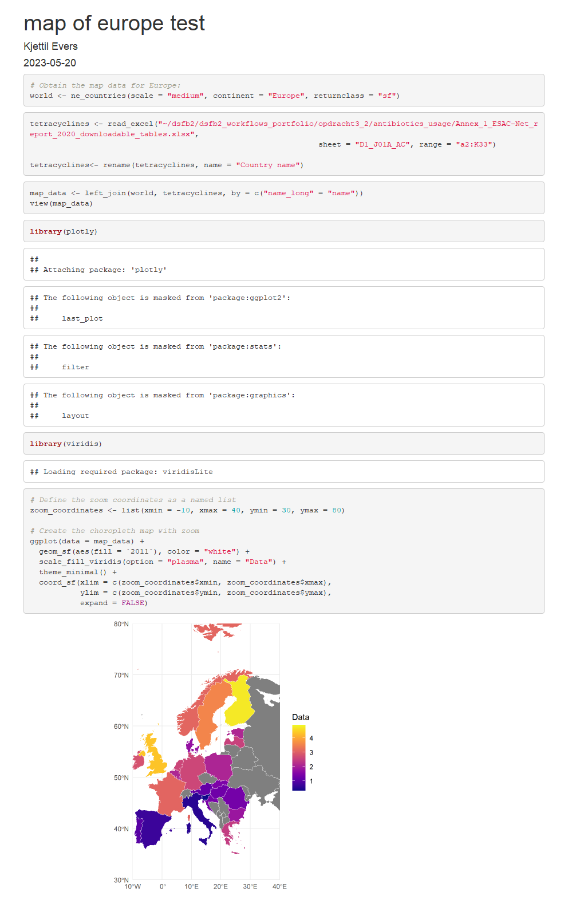

3 looking ahead
In this exercise is about what I want to do with my free school time this semester. This is done by answering a few questions.
The first question was where I see myself in ~2 years
- In the next years I will be focusing on my lab and data science experience, but I don’t want to work in the lab my whole life. This is the why I choose to learn data science. Later in life I want to become a senior analist or higher like the head of the lab and work a more communication like job. This is where the data science comes in handy. The skills I acquired will be useful for me to make a good visualization of the data and allow me to communicate this way with the lab and the people I work for.
How am I doing now with respect to this goal?
- currently I’m working in a lab doing viral diagnostics and getting the experiences I need to get higher up. I’m also working on my data science skills by working on my portfolio and doing exercises that help me get better in data science. However because I am still in school, the working part of my goal is at a hold, so for now I will be focusing on data science.
What would be the next skill to learn?
- The next skill I want to learn is to make dashboards with R shiny. Learning to make dashboards in shiny will be useful to achieve my goal I mentioned earlier. A shiny dashboard will be specifically helpful for the communication part of my goal, because it allows me to make a good visualization of the data and communicate this way with other people.
3.1 planning
To achieve this goal I made a planning that contains the following steps:
First day
The first day I will be looking for a good dataset I want to visualize in shiny
after finding a dataset I will first make the basic visualizations in Rmarkdown, so I know how I want to visualize it and what it should look like.
Below you can find a preview of the first visualization:
webshot::webshot("data/opdracht3_2/test_map.html", "data/opdracht3_2/test_map.png")
Second day
- The next step is to start an introduction to R shiny, by watching the following tutorials on youtube:
R Shiny Dashboard Project | 1973 USArrests Dashboard for beginners | R Shiny Tutorial for Beginners and How to create interactive maps in R? Leaflet and Mapdeck?
I also read the information on https://shiny.posit.co/.
Third and fourth day
- I will be starting on my dashboard for the dataset I found Because of the time limit I will first be making the visualizations and then I will be creating the dashboard it self. The goal is the make the dashboard interactive so you can choose a antibiotic and a year then the dashboard will show you a map of Europe showing Antibiotic usage per country
fourth day and fifth day
After finishing the dashboard I will make a new tab with additional information about the dataset.
At last I will make my shiny dashboard available throug shinyapp.io so it will be easily accessable.